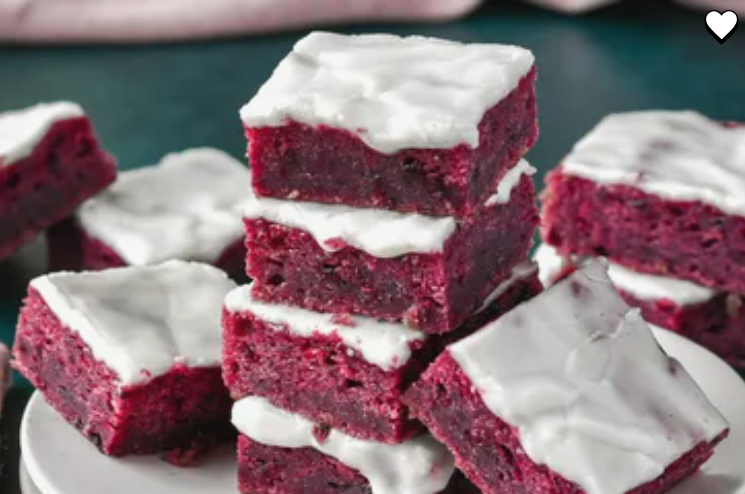

Coffe Cake
CARROT CAKE RECIPES
This carrot coffee cake is a classic streusel coffee cake with a carrot cake profile. Nicely spiced and moist, with finely shredded carrots, walnuts, and a cream cheese glaze, it's just right for a spring brunch buffet.
Ingredients
- 1/3 cups frozen blackberries
- 1/2 cup unsalted butter, softened
- 1 cup white sugar
- 1/2 teaspoon salt
- 1 tablespoon freshly grated lemon zest
- 1 tablespoon fresh lemon juice
- 1/2 teaspoon vanilla extract
- 1 cup plus 2 tablespoons all-purpose flour
- 1 tablespoon cornstarch
- 1/2 teaspoon baking powder
Steps
- Preheat the oven to 350 degrees F (180 degrees C). Line an 8x8-inch square pan with enough parchment paper to have overhang on all sides.
- Place frozen blackberries in a microwave-safe bowl. Microwave until blackberries are thawed, about 2 minutes. Do not drain.
- In a large bowl, beat butter, sugar, and salt with an electric mixer until light and fluffy, about 3 minutes. Add in blackberries and their juices, lemon zest, lemon juice, and vanilla and beat until blackberries are broken down and incorporated, about 3 minutes. Mixture will still look slightly curdled. Mix in flour, cornstarch, and baking powder on low speed until combined.
- Pour batter into the prepared pan and spread into an even layer.
- Bake in the preheated oven until bars are puffed, and feel almost set, but still soft in the middle 30 to 35 minutes. Remove from the oven, and allow the bars to cool completely in the pan, about 20 minutes.
- For glaze, whisk confectioner’s sugar, salt, lemon juice, and heavy cream together until smooth; add lemon juice or heavy cream, a little at a time, as needed for a pourable consistency. Pour glaze over cooled bars and spread into an even layer. Allow glaze to set for about 15 minutes; lift bars from the pan using the parchment overhang. Cut into 16 servings.